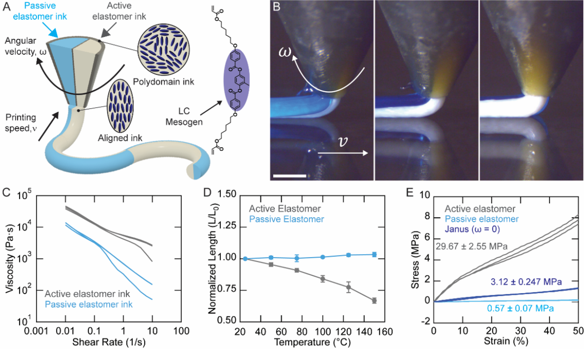

Figure 2 回転率を変えると、曲がり方・ねじれ方が変わる

ノズルの回転速度と印刷速度の関係を変えることで、まっすぐな糸が、曲線、らせん、波形などさまざまな形に変化します。
熱を加えると、まっすぐだった糸が曲がる。ねじれる。縮む。広がる。まるで生き物の筋肉のように動く。今回の研究は、そんな「動く材料」を、3Dプリンターで最初から設計して作る方法を示したものです。
この記事では、ハーバード大学の研究グループが発表した「回転マルチマテリアル3Dプリンティング」による人工筋肉フィラメントの研究を、中学生にも分かるように解説します。難しい言葉も出てきますが、中心にある考え方はとてもシンプルです。動く材料と動かない材料を、糸の中にうまく配置すれば、形の変化をあらかじめ命令できる、ということです。
人間の筋肉は、脳からの信号を受けて縮みます。腕を曲げる、歩く、まばたきをする、心臓が動く。こうした動きは、筋肉の繊維が集まって、短くなったり力を出したりすることで起こります。
では、ロボットにも同じような「筋肉」を作れないでしょうか。金属のモーターではなく、やわらかい材料そのものが曲がったり、縮んだり、ねじれたりする。そうなれば、ロボットはもっと生き物に近い動きができます。たとえば、果物をつぶさずにつかむ手、体の中でやさしく動く医療器具、温度に反応して開閉するフィルターなどが考えられます。
今回の論文が扱っているのは、そのような人工筋肉の材料です。ただし、ここでいう人工筋肉は、人間の筋肉をそのまままねたものではありません。熱を加えると形が変わる「液晶エラストマー」という材料を使い、3Dプリンターで細い糸状に作ったものです。
中学生向けの一言：人工筋肉とは、「電気や熱などの刺激で、自分から曲がったり縮んだりする材料」のことです。
自然界には、細長いものがたくさんあります。植物のつる、髪の毛、タンパク質、腸、ゾウの鼻、タコの腕。これらは、ただの棒ではありません。曲がる、巻きつく、ほどける、伸びる、縮むという複雑な動きをします。
特に面白いのは、細長いものが集まると、全体として大きな働きが生まれることです。筋肉もその一例です。一本一本の繊維は細くても、束になると大きな力を出せます。紙一枚は弱くても、何枚も重ねると厚紙になるのと似ています。
今回の研究者たちは、こうした自然のしくみに注目しました。細い糸一本の中に「どちら側が縮むか」「どの向きにねじれるか」という情報を入れておけば、その糸をたくさん組み合わせて、さらに大きな構造を動かせるのではないか。これが研究の出発点です。
この研究を理解するための最重要キーワードは、能動材料と受動材料です。
能動材料とは、温度などの刺激を受けると自分で形を変える材料です。今回の研究では、液晶エラストマー、つまりLCEが使われています。LCEは、ゴムのようにやわらかい性質と、液晶のように分子が向きをそろえる性質をあわせ持っています。熱を加えると、分子の向きに沿って縮むという特徴があります。
受動材料とは、温度が変わってもあまり形を変えない材料です。こちらは、動きを生み出す主役ではありません。しかし、ただの脇役でもありません。能動材料が縮もうとするとき、受動材料が「こっちはあまり縮まないよ」と抵抗するため、全体が曲がったり、ねじれたりするのです。
これは、二枚の紙を貼り合わせる実験に似ています。片方の紙だけを水でぬらすと、ぬれた紙はふくらんだり縮んだりして、全体が反ります。片側だけが変化するから、まっすぐではいられなくなるのです。
この研究の基本原理：片側が縮み、片側が縮まない。だから糸全体が曲がる。さらに、縮む向きをらせん状に配置すれば、糸はねじれる。
普通の3Dプリンターは、材料をノズルから出して、少しずつ積み上げて形を作ります。今回の研究で使われた方法は、そこに「回転」という工夫を加えています。
ノズルの中には、能動材料と受動材料が半分ずつ入っています。ちょうど、チョコとバニラが半分ずつ入ったソフトクリームのような断面です。このように、表と裏で性質が違う構造は、ローマ神話の二つの顔を持つ神にちなんでJanus構造と呼ばれます。
このノズルを回転させながら材料を押し出すと、糸の中の能動材料と受動材料の位置が、らせん状に変わっていきます。つまり、3Dプリンターが単に「形」を作っているだけではなく、糸の内部に「どう動くか」という命令を書き込んでいるのです。
ここで大事なのは、できあがったあとに機械で曲げたり、別の部品を組み合わせたりしているわけではない点です。印刷している最中に、分子の向きと材料の配置が決まります。だから、熱を加えたときの動きも、印刷条件によって決まります。

青は受動エラストマー、灰色は能動エラストマーを表しています。回転するノズルから二種類の材料を同時に押し出し、一本の複合フィラメントを作ります。
図1Aは、この研究のしくみを一枚で示しています。ノズルから二種類のインクが出ています。ひとつは受動エラストマー、もうひとつは能動エラストマーです。ノズルは回転しているため、糸の中で二つの材料の位置が少しずつ変わります。
図1Bは、実際にノズルから材料が押し出される様子です。細い糸が作られていく瞬間に、内部構造も同時に決まっていきます。ここが普通の「ただ形を作る3Dプリント」と大きく違います。
図1Cは粘度のグラフです。粘度とは、材料の流れにくさです。はちみつは水より粘度が高い、と言えば分かりやすいでしょう。3Dプリンターで材料を押し出すには、ノズルの中では流れやすく、出た後は形を保てる必要があります。今回のインクは、押し出すときには流れやすくなる性質を持っています。
図1Dは、温度を上げたときに材料の長さがどう変わるかを示しています。能動エラストマーは加熱で短くなります。一方、受動エラストマーはほとんど長さが変わりません。この差が、曲がる力の源です。
図1Eは、材料の硬さを比べています。能動エラストマーは受動エラストマーよりかなり硬いことが分かります。硬さ、縮みやすさ、配置。この三つが組み合わさって、人工筋肉の動きが決まります。
図1の読み方：「縮む材料」と「縮まない材料」を同じ糸に入れ、さらにその配置を回転で変える。これが人工筋肉フィラメントの土台です。
ノズルの回転速度と印刷速度の関係を変えることで、まっすぐな糸が、曲線、らせん、波形などさまざまな形に変化します。
図2は、この研究の中でも特に重要です。ここでは、回転の強さを変えることで、フィラメントの動きがどのように変わるかを示しています。
研究では、無次元回転率という量が使われています。少し難しい言葉ですが、意味は「ノズルがどれくらい回転しながら印刷しているか」を表す目安です。ノズルがあまり回転しなければ、材料の配置はあまりねじれません。強く回転すれば、材料の配置はらせん状になります。
図2Cを見ると、回転率が小さいと糸は比較的ゆるやかに曲がります。回転率が大きくなると、青と白の模様がらせん状になり、加熱したときの形も複雑になります。まるで、印刷時に「将来こう曲がりなさい」と書き込んでいるようです。
図2Dでは、印刷速度を変えると、熱を加えた後の曲がり具合も変わることが示されています。ゆっくり印刷するか、速く印刷するかでも、材料内部の向きや配置が変わるためです。
図2Eには、X線散乱によって調べた分子の向きが示されています。これは、研究者が「本当に液晶分子が狙った向きに並んでいるのか」を確認するための証拠です。見た目だけではなく、内部の分子配向まで調べている点が、この研究の強いところです。
図2Fと図2Gでは、能動材料だけのフィラメントと、能動・受動を組み合わせた複合フィラメントが比べられています。複合フィラメントの方が、熱を加えたときにより大きく、より多様な形に変化します。これは、受動材料が単なる飾りではなく、動きを作るための重要な相棒であることを示しています。

正弦波状のフィラメントを組み合わせると、加熱によって広がる格子や縮む格子ができます。温度を上げ下げすると、くり返し動作します。
一本の糸が曲がるだけでも面白いのですが、研究の狙いはさらに先にあります。糸を組み合わせて格子を作ると、面全体が広がったり縮んだりする構造になります。
図3Aと図3Bは、能動材料を波の外側に置くか、内側に置くかで、加熱時の変形が変わることを示しています。外側に置くと、波がほどけるように伸びて、格子は広がります。内側に置くと、波がより丸まるように動き、格子は縮みます。
図3Cと図3Dは、実際のフィラメントの写真です。同じような波形に見えても、能動材料の場所が違うだけで、熱を加えたときの動きは反対になります。ここが「形をプログラムする」という言葉の意味です。完成した形ではなく、完成後の動きまで設計しているのです。
図3Eと図3Fでは、波形フィラメントを組み合わせた格子が示されています。片方は加熱で大きく広がり、もう片方は小さく縮みます。これは、フィルターやグリッパーに使える重要な性質です。
図3Gは温度と面積の関係です。温度が上がると、広がる格子は面積が増え、縮む格子は面積が減ります。図3Hは、温度を上げ下げするサイクルを10回くり返した結果です。何度も動かしても、ある程度きちんと元に戻ることが分かります。
図3のポイント：一本の人工筋肉フィラメントを並べると、「動く面」を作れる。これは、ロボットの皮膚、開閉するフィルター、温度で形を変える構造につながります。
この研究は基礎研究ですが、応用の可能性もはっきり示されています。
硬いロボットアームは、同じ形の物体を正確につかむのは得意です。しかし、やわらかいもの、形がばらばらなもの、壊れやすいものをつかむのは苦手です。人工筋肉フィラメントで作った格子なら、対象に合わせてやわらかく変形できます。果物、細胞、医療用の小さな部品などを、そっと扱える可能性があります。
格子が温度で広がったり縮んだりすれば、穴の大きさを変えられます。つまり、温度によって通すものと止めるものを変えるフィルターになります。水、油、空気、薬剤などの流れを制御するバルブにも応用できるかもしれません。
論文では、からみ合った注入可能なフィラメントが、体内で多孔質構造を作る可能性にも触れられています。多孔質とは、小さな穴がたくさんある構造のことです。表面積が大きくなるため、組織の修復や止血などに役立つ可能性があります。ただし、これはまだ将来の応用であり、すぐに医療現場で使えるという意味ではありません。
小さなフィラメントの集合体が大きくなれば、温度や光で開閉する構造、展開するアンテナ、変形するシートなどにもつながります。材料そのものが動くので、モーターや歯車を減らせる可能性があります。
この研究のすごさは、単に「動く材料を作った」ことではありません。動く材料はこれまでも研究されてきました。重要なのは、動き方を3Dプリントの段階で書き込めることです。
これまで複雑な変形を作るには、何層もの材料を貼り合わせたり、あとから引っ張ったり、機械的な加工を加えたりする必要がありました。しかし今回の方法では、ノズルを回転させながら印刷することで、糸の内部に曲率やねじれの情報を直接入れられます。
言い換えると、3Dプリンターが「物の形」だけでなく「物の未来の動き」まで作る道具になったのです。これは、製造の考え方を大きく変える可能性があります。
また、研究では実験だけでなく、理論モデルやシミュレーション、X線による分子配向の確認も組み合わされています。見た目に曲がったから成功、ではなく、なぜ曲がるのか、どの条件でどのように変わるのかを調べています。ここが科学論文としての説得力です。
| 観点 | 中学生向けの説明 | 研究上の意味 |
|---|---|---|
| 材料 | 縮むゴムと縮まないゴムを組み合わせる | 能動・受動材料の差で曲げを作る |
| 作り方 | ノズルを回しながら3Dプリントする | 内部構造と分子配向を同時に制御する |
| 動き | 熱で曲がる、ねじれる、広がる、縮む | プログラム可能な形状変形を実現する |
| 応用 | やわらかい手、開閉フィルター、医療材料 | ソフトロボティクスやバイオ材料へ展開できる |
ただし、何でもすぐに実用化できるわけではありません。液晶エラストマーは有望な材料ですが、産業製品として広く使われるには、耐久性、反応速度、温度条件、安全性、量産性などをさらに調べる必要があります。
また、今回の刺激は主に温度です。温めれば動くというのは分かりやすい反面、実際のロボットで使うには、どのように素早く温め、どのように冷やすかが課題になります。電気、光、磁場などで動かせる材料と組み合わせれば、さらに使いやすくなるかもしれません。
それでも、この研究は大きな一歩です。なぜなら、人工筋肉を「材料を選ぶ問題」から「内部構造を設計する問題」へ進めているからです。同じ材料でも、配置と向きが違えば動きが変わる。これは、生き物の体にも似ています。骨、筋肉、腱、皮膚は、それぞれの材料だけでなく、並び方によって働きが決まっています。
今回の研究は、回転マルチマテリアル3Dプリンティングによって、熱で曲がり、ねじれ、広がり、縮む人工筋肉フィラメントを作ったものです。中心にある考え方は、能動材料と受動材料を一本の糸の中に配置し、その配置をノズルの回転で制御することです。
能動材料である液晶エラストマーは、熱で特定の方向に縮みます。受動材料はあまり縮みません。この差によって、糸は曲がります。さらに、ノズルを回転させて材料の配置をらせん状にすれば、糸はねじれます。こうして、印刷時の条件によって、完成後の動きをあらかじめ決めることができます。
一本の糸だけでなく、波形フィラメントを組み合わせた格子では、加熱によって面全体が広がったり縮んだりしました。これは、フィルター、グリッパー、医療材料、ソフトロボットなどへの応用につながります。
この研究が示している未来は、「形を作る時代」から「形の変化を作る時代」への移行です。3Dプリンターは、物体を作る機械から、動きを書き込む機械へ変わりつつあります。人工筋肉とは、単に人間の筋肉をまねる技術ではありません。材料そのものに動きの設計図を持たせる技術なのです。
最後の一言：これからのものづくりでは、「どんな形か」だけでなく、「あとでどう動くか」まで設計する時代が来るかもしれません。
記事タイトル: Toward Artificial Muscles That Bend and Twist on Demand
副題: Rotational multimaterial 3D printing enables nature-inspired, shape-morphing filaments
日付: May 19, 2026
著者: Anne J. Manning
研究論文: Rotational 3D printing of active-passive filaments and lattices with programmable shape morphing
主な研究者: Mustafa K. Abdelrahman, Jackson K. Wilt, Yeonsu Jung, Rodrigo Telles, Gurminder K. Paink, Natalie M. Larson, Joanna Aizenberg, L. Mahadevan, Jennifer A. Lewis